.jpg)
The resort was huge, I think they said there were over 2,000 employees at this resort alone.

The living room part of our suite. There was also a dining area, kitchen and two bedrooms.
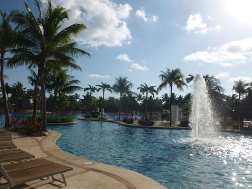
Views of the largest of the many amazing pools.
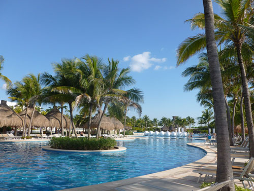

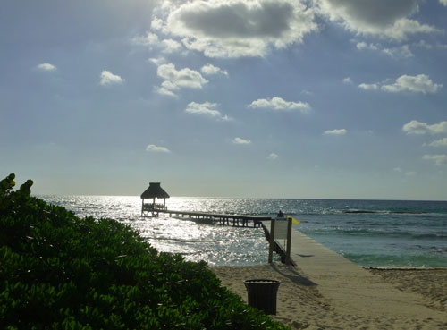
The beach area.

Exploring the resort

Our first full day in Mexico started at Puerto Morelos for a snorkeling trip.
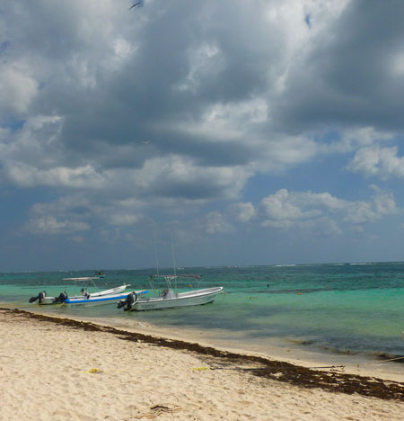
Our first full day in Mexico started at Puerto Morelos for a snorkeling trip.
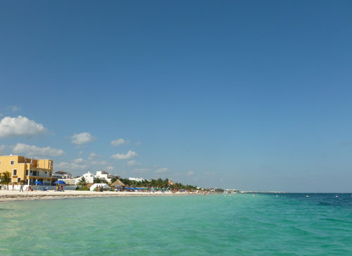
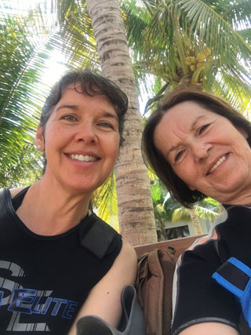
Me & Mom in our wet suits, waiting for the trip to start
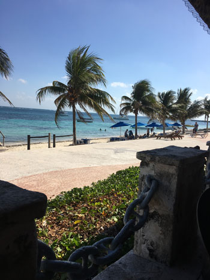
After the snorkel trip we found a great beachside restaurant.

Mom at our beachside table. I really enjoyed this meal a lot - fresh ceviche by the sea.

A view of the patio with the mariachi band.

Walking around town, we saw these Army guys and had to take a picture for Brodie.
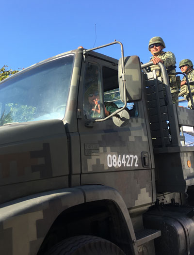
Of course, Mom got them to wave at us!
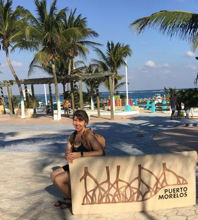
Taking advantage of the tourist-friendly signage.


Back at the resort for Day 2 - chill day.
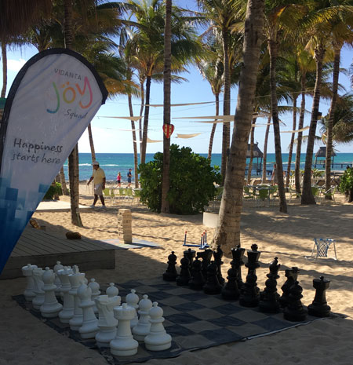
The giant chess set in the kids' play area.
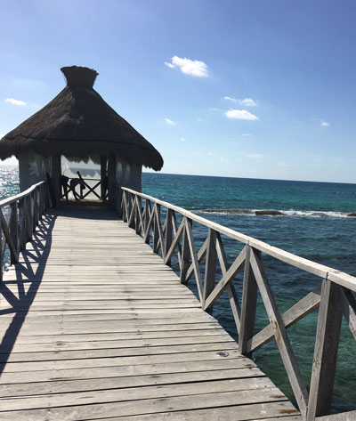
We were a little late for the yoga class, but it was great once we go there. it was in a very nice location!

There were lots of lizards around the resort.

A bar with swings instead of seats. We never saw it at night but I'll bet there were some drunks who take a tumble!
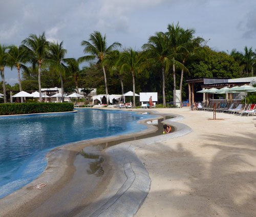
One of the pools had a sandy beach beside it.

Waterways around the resort
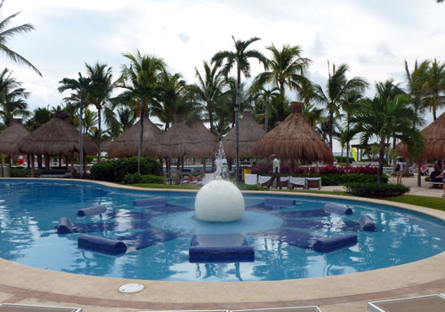
A pool with built-in lounge chairs

Another look at the beach area
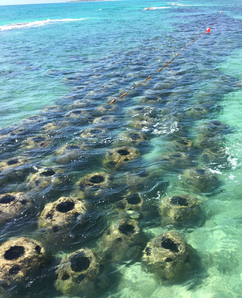
Artificial reefs around the resort, the fish loved them!

We found some partial shade in this pool where we could watch the activity at the swim-up bar.

Mom & I started on the beach, but I started to fry so we headed for the pool.
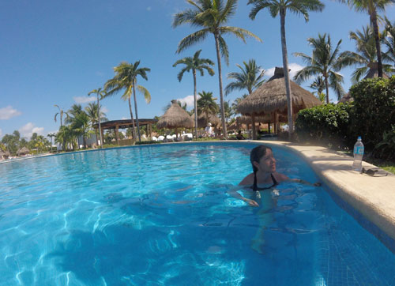
Me enjoying the aforementioned shade.
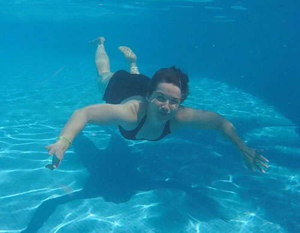
Mom used the GoPro to film me swimming, this is a still from one of the videos.
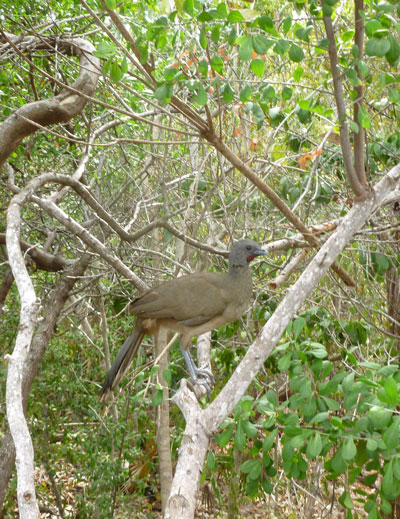
Later we took a jungle tour, where we saw lots of cool wildlife around the resort.

Termite house

I forgot the name of this lizard, but the guide was excited about seeing him.
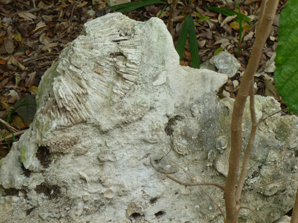
Fossils from the area.

A lizard beside his house
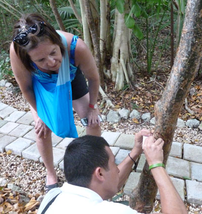
The guide showing Mom the medicinal properties of this tree's sap. I think maybe it was Eucalyptus and he put it on our bug bites.

One of the crocodiles they have in the resort
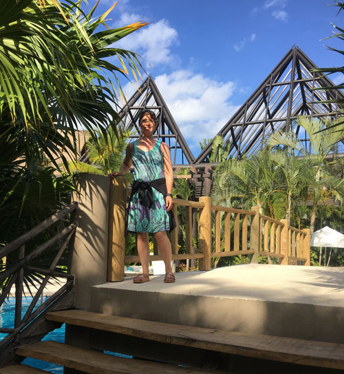
Touring the "sleepy pool" area. We often ended up here in the late afternoon where they played soft music and most of the other patrons were snoozing.

Out to dinner at the resort with Mom. This one was on the golf course.
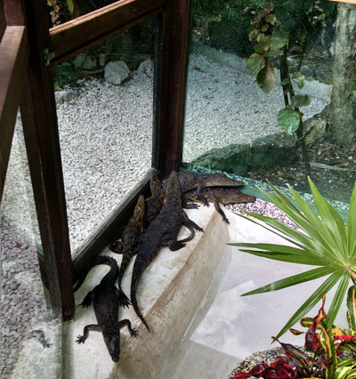
Baby crocodiles, all in a pile
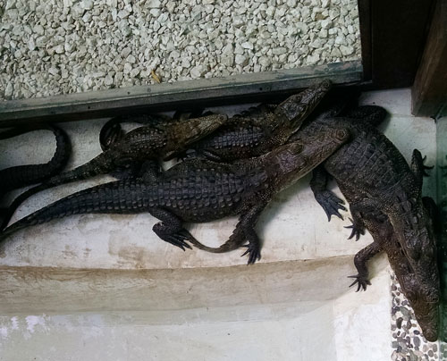
Arial view of the same baby crocs

A heron (I think?) hunting for his own snack near the snack bar area.
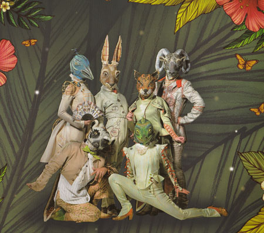
There was a Cirque Du Solei show on the resort property. Mom treated me to a show on this evening, as I'd never seen one. It was called Joya. It was great!

One of the many amazing acts in the show.
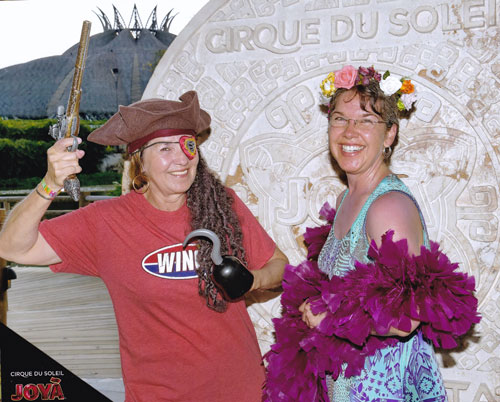
They had these photos with props at the entrance, and we got so tickled. Mom put that hook on her hand and promptly tried to touch her eye, nearly blinding herself. We cracked up!
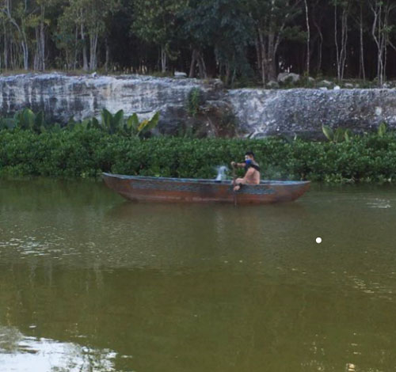
Mayan-style guy paddling around blowing smoke

The theater lit up for the evening

The next day was Playa del Carmen day. But first, the shuttles. They were an integral part of daily life in such a huge place.

Ready for adventure!

In the shopping area of Playa del Carmen. Eric & I went to this town over 20 years earlier for our honeymoon. It was completely unrecognizable from the ramshackle little place we saw back then.

First activity - a tour of a glass-blowing factory. It was SO hot in there for those poor guys.

Next activity, a cenote tour. (Pronounced: see-note-tay)
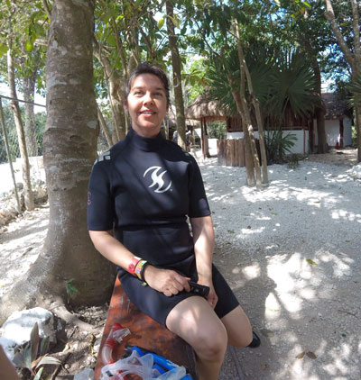
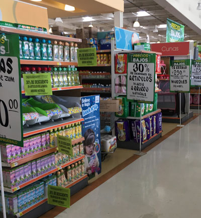
Naturally, we just had to visit the Mexican version of Wal-Mart.
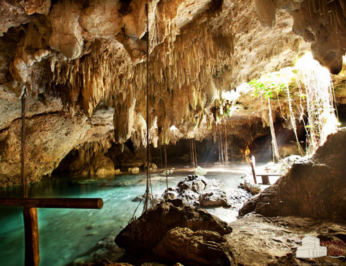
These pictures were purchased from the tour company, Chaak-Tun.
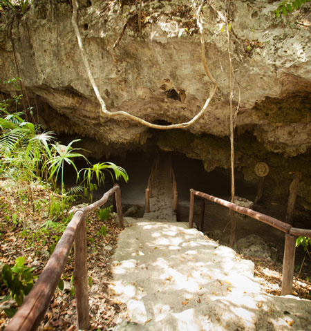
These pictures were purchased from the tour company, Chaak-Tun.
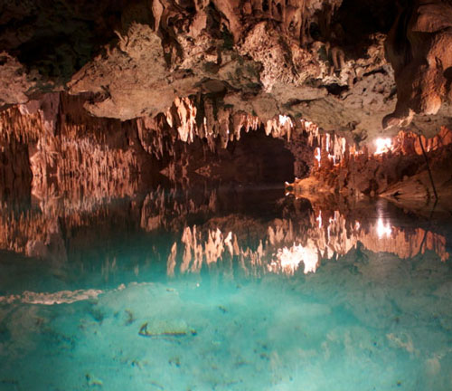
Chaak-Tun's great shots of the watery caves
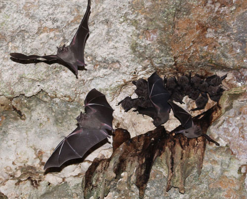
There were LOTS of bats, the tour company got very good pictures of them.
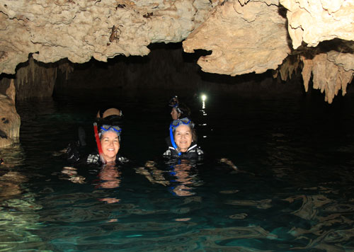
These were taken by the photographer who was assigned to accompany our tour group.


Here we are getting a safety briefing. I seem to be paying very close attention.
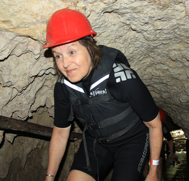
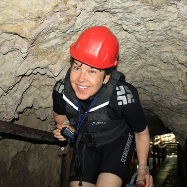
We have a touch of the Laurel & Hardy going on in our hard-hats.
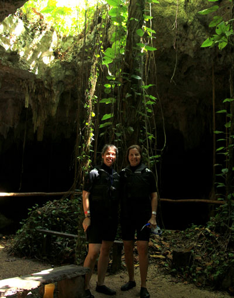


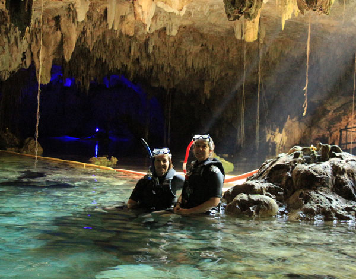
This formation looked like a turtle shell

I think I took this one with Mom's GoPro.
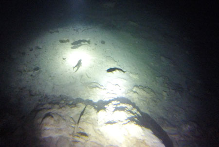
I know for sure I took the rest of these with Mom's GoPro during the tour. These are catfish.

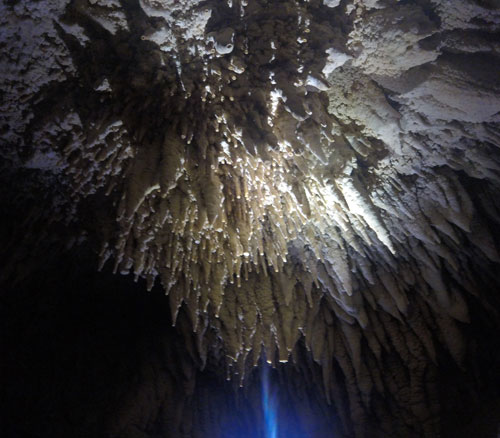
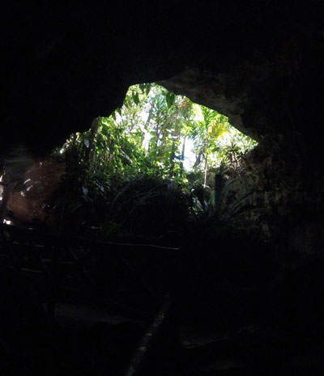

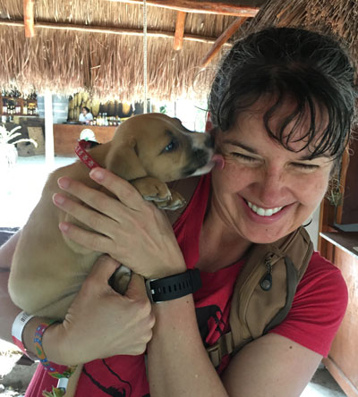
The best part of the tour - meeting the puppy that one of the workers had on site.

He wore himself out with his bongo drums. Just had to take a rest.

Pretty Mom and a pretty beach.
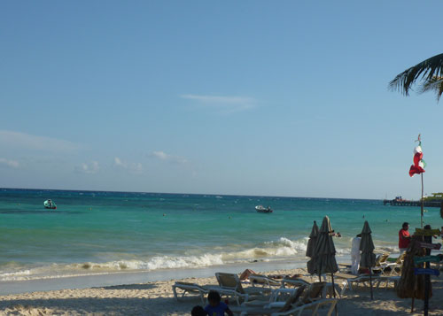
Still in Playa del Carmen here
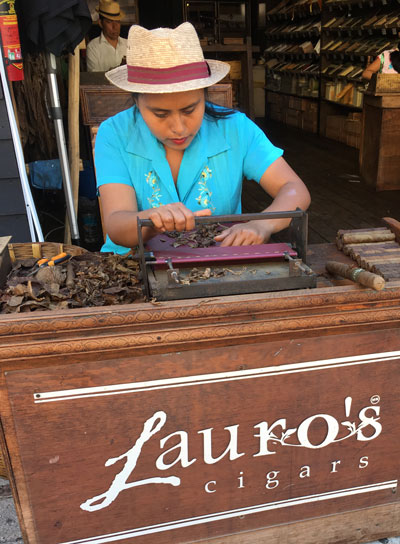
Watching a lady make cigars in Playa del Carmen

Back at the resort and rested, we headed out for a nighttime view of the pools.

Next was karaoke, and no, we did not sing. We sure heard a lot of "singing" though.
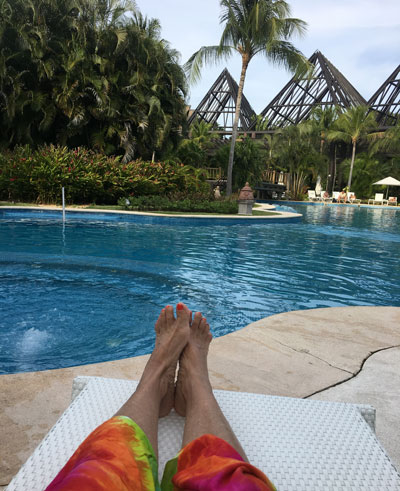
The final shot is one of Mom at the sleepy pool, a great way to finish a great trip!